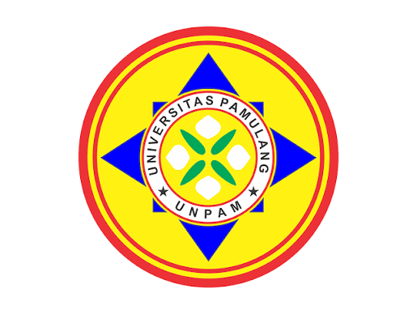
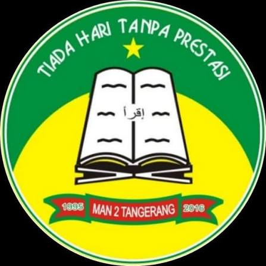

Mahasiswa Program Studi Sistem Informasi Universitas Pamulang Kampus Kota Serang dengan minat pada bidang Data Analyst, Business Intelligence, dan Web Development. Aktif mengembangkan kemampuan analisis data, pemrograman, serta penerapan teknologi informasi.

Menempuh pendidikan menengah atas pada jurusan Ilmu Pengetahuan Alam (IPA). Selain memperoleh pengetahuan akademik, juga mengembangkan kedisiplinan dan kemampuan berpikir kritis sebagai bekal melanjutkan pendidikan ke perguruan tinggi.